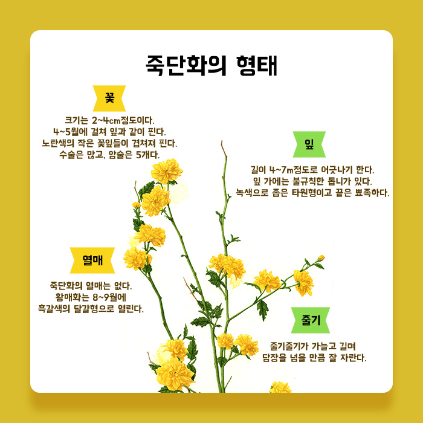
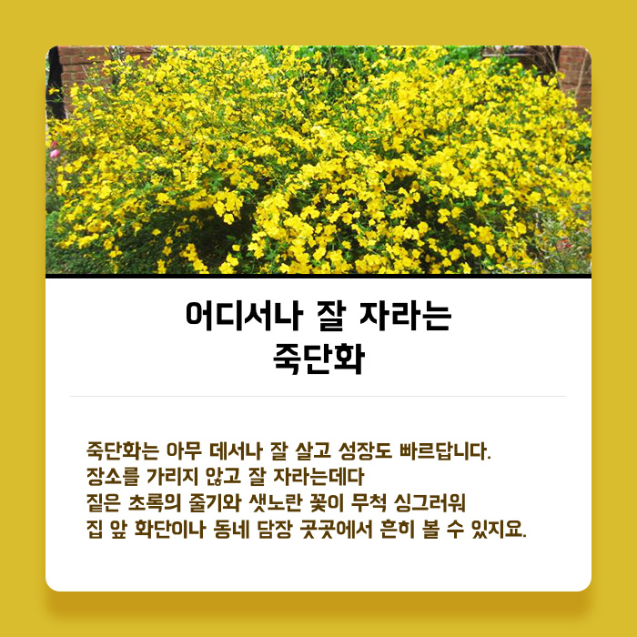
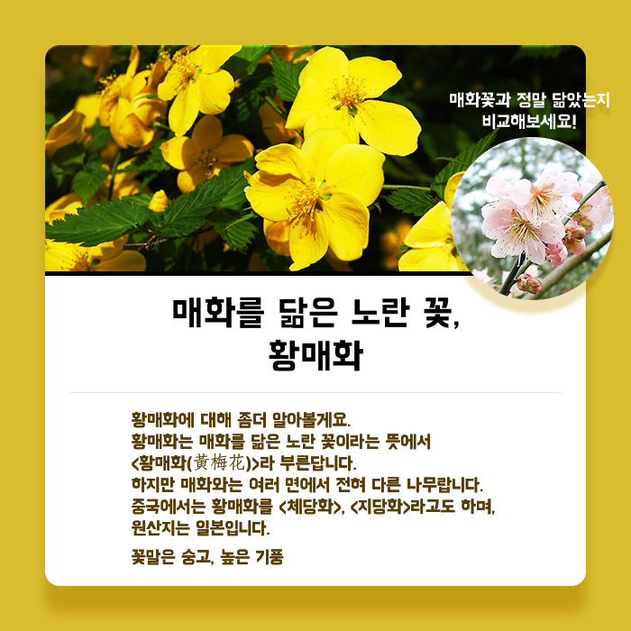
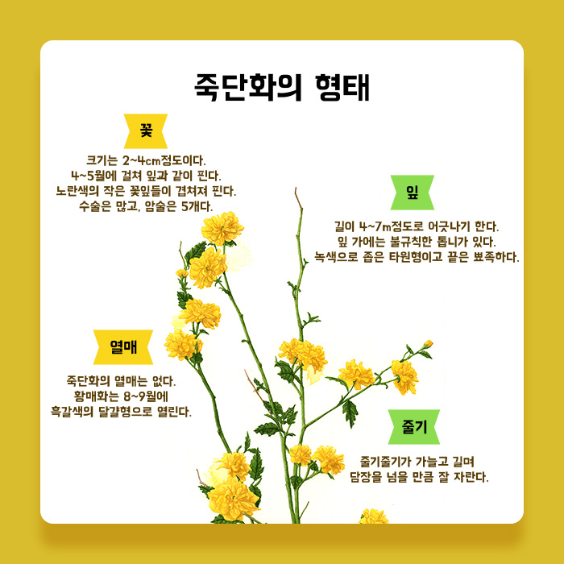
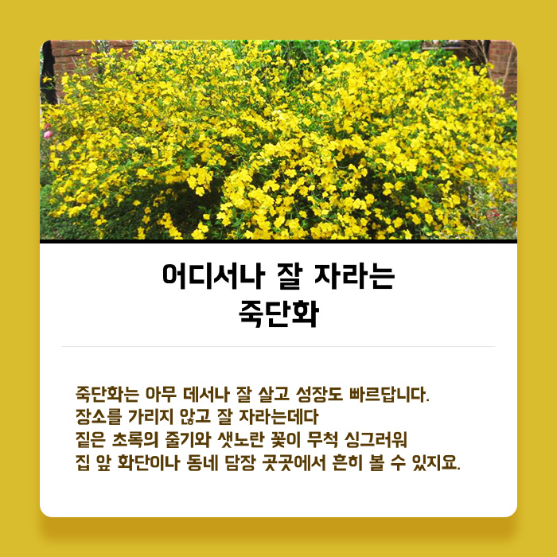
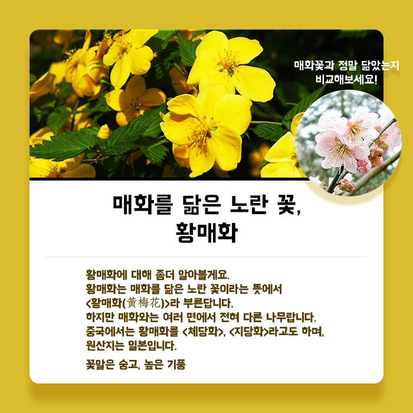

초록 가지에 달린 노란 꽃죽단화
* 장미과
* 꽃피는 시기 : 4~5월
* 열매 맺는 시기 : 10월
* 다른 이름 : 겹황매화, 죽도화
* 꽃말 : 숭고, 왕성, 고귀
* 원산지 : 한국
봄 화단과 울타리를 가득 메운 노란 꽃
봄이 한창인 4~ 5월 개나리가 지기 시작할 즈음, 초록빛이 짙은 잎사귀 사이에 샛노란 꽃이 잔뜩 달린 자그마한 나무가 있을 거예요. <장미과>라서 장미 덩굴처럼 무더기로 자라기 때문에 얼핏 보면 노란 장미로 착각할 수 있어요. 하지만 자세히 들여다보면 가시가 없는 죽단화랍니다.
꽃잎 개수만 다르데요! 황매화 vs 죽단화
꽃이 대나무 칼처럼 생겨서, 사계절 푸른색의 줄기가 대나무 같다 해서 죽단화라 불렀다고 합니다. 죽단화는 <죽도화>라고 부르기도 한답니다. 죽단화와 모든 것이 거의 같은데 꽃잎의 개수만 다른 꽃이 있어요. 바로 노란 꽃잎이 5장으로 피는 황매화랍니다. 죽단화는 황매화의 노란 꽃잎이 여러 개로 풍성하게 겹쳐 핀다 하여 <겹황매화>라 부기기도 하지요
황매화 꽃잎이 5장으로 핀다황매화와 죽단화 비교
황매화와 죽단화의 모습을 잘 살펴보면 꽃잎의 개수만 다를 뿐 두 나무의 모양, 줄기, 잎, 꽃의 색깔 등이 거의 모든 부분이 같다고 할 수 있어요. 죽단화는 황매화의 꽃을 조금 다르게 개량한 나무니까요. 다시 말해 두 나무는 한 가족이나 다름없죠. 요즘은 황매화보다 여러 장의 꽃잎이 겹쳐 피는 죽단화를 흔히 볼 수 있답니다.
죽단화(겹꽃잎) 황매화(홑꽃잎)죽단화의 형태
꽃 크기는 2~4㎝ 정도이다.4~5월에 걸쳐 잎과 같이 핀다. 노란색의 작은 꽃잎들이 겹쳐져 핀다. 수술은 많고, 암술은 5개다.
잎 길이 4~7㎝ 정도로 어긋나기 한다.잎 가에는 불규칙한 톱니가 있다.녹색으로 좁은 타원형이고 끝은 뾰족하다.
열매 죽단화의 열매는 없다.황매화는 8~9월에 흑갈색의 달걀형으로 열린다.
줄기 줄기가 가늘고 길며 담장을 넘을 만큼 잘 자란다.
어디서나 잘 자라는 죽단화
죽단화는 아무 데서나 잘 살고 성장도 빠르답니다. 장소를 가리지 않고 잘 자라는데다 짙은 초록의 줄기와 샛노란 꽃이 무척 싱그러워 집 앞 화단이나 동네 담장 곳곳에서 흔히 볼 수 있지요.
매화를 닮은 노란 꽃, 황매화
황매화에 대해 좀더 알아볼게요. 황매화는 매화를 닮은 노란 꽃이라는 뜻에서 <황매화(黃梅花)>라 부른답니다. 하지만 매화와는 여러 면에서 전혀 다른 나무랍니다. 중국에서는 황매화를 <체당화>, <지당화>라고도 하며, 원산지는 일본입니다. 꽃말은 숭고, 높은 기풍
매화꽃과 정말 닮았는지 비교해보세요!황매화의 전설
옛날 황씨 성을 가진 한 부자가 외동딸을 데리고 행복하게 살고 있었습니다. 고운 처녀로 자란 딸은 이웃의 청년과 사랑에 빠집니다. 어느 날 마을을 잠시 떠나게 된 청년은 이별의 징표로 손거울을 쪼개어 서로 나눠 갖기로 합니다. 한편 처녀를 평소 짝사랑해오던 뒷산의 도깨비는 청년이 떠나자 처녀를 도깨비굴에 가두고 입구를 가시나무로 막아버렸습니다. 세월이 흘러 마을로 돌아온 청년은 처녀를 찾아 도깨비굴로 달려갔지만 가시나무 때문에 구할 수가 없었습니다. 도깨비가 거울에 반사되는 햇빛을 싫어한다는 사실을 알고 있었던 처녀는 청년에게 징표로 갖고 있던 반쪽 거울을 던져주었습니다. 청년은 자신이 가지고 있던 거울 조각과 맞추어 도깨비의 얼굴에 햇빛을 비추었습니다. 놀란 도깨비는 멀리 도망쳐 버렸고, 굴 앞의 가시나무는 차츰 아름다운 꽃을 피우는 황매화가 되었다고 합니다
참고자료 : Daum백과 - 우리나무의 세계